前兩天我們把 DApp 的一些基礎功能開發出來了，但還沒有在 UI/UX 上著墨太多。今天要介紹的 Rainbow Kit 就是可以用來快速開發一個好看的連接錢包功能的 library，包含多種錢包連接選項、更改主題顏色等等，從這裡也會延伸介紹他支援的 Wallet Connect 協議，並實際串上 Wallet Connect 協議來發送交易。
Rainbow Kit 是由 Rainbow 錢包開發的 Web SDK，許多 DApp 都有使用，主要是因為他的 UI/UX 做得很好，整合上也很容易。要看呈現效果的話可以在他的官網右上角點擊 Connect Wallet 看到連接錢包的列表
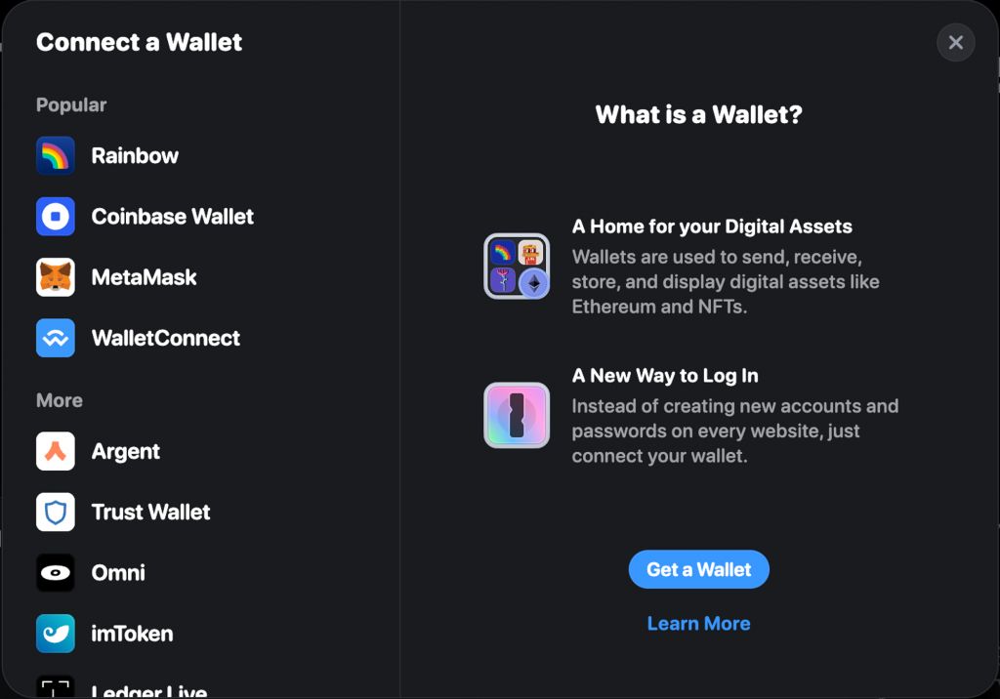
點擊 Metamask 並在 Metamask 的彈窗中確認後就成功連接上了，右上角的 Connect Wallet 按鈕會變成顯示選擇的鏈、地址跟 ETH 餘額
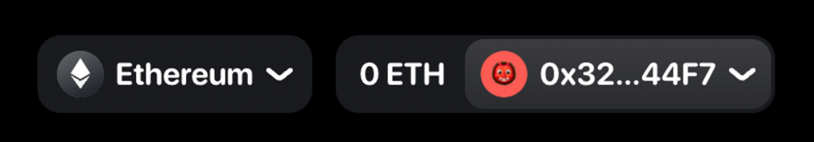
這裡面有許多可以更改的選項，接下來就直接按照官方的安裝步驟用 rainbowkit 建立一個新的 wagmi + Next.js app：
[code] pnpm create @rainbow-me/rainbowkit@latest
[/code]
照著 cli 指示就能建立好一個新的專案了。進到剛創立的資料夾執行
pnpm dev 就可以把它跑起來：
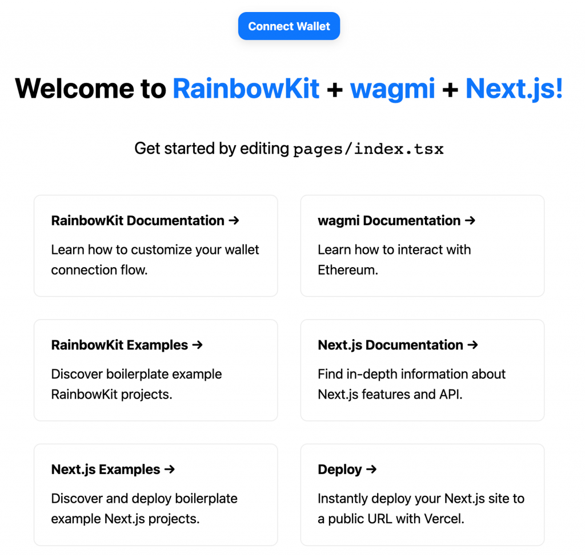
在 _app.tsx 裡可以看到詳細的用法，前面的
configureChains 之前有介紹過，再來用
getDefaultWallets 拿到預設的錢包列表（包含 Rainbow,
Coinbase Wallet, Metamask 等等），用它建立 wagmi config，並把整個 App
包在 RainbowKitProvider 底下，就可以在任何地方使用 Rainbow
Kit 提供的 Components。
[code] const { chains, publicClient, webSocketPublicClient } = configureChains( [ mainnet, polygon, optimism, arbitrum, base, zora, …(process.env.NEXT_PUBLIC_ENABLE_TESTNETS === ‘true’ ? [goerli] : []), ], [publicProvider()] );
const { connectors } = getDefaultWallets({
appName: 'RainbowKit App',
projectId: 'YOUR_PROJECT_ID',
chains,
});
const wagmiConfig = createConfig({
autoConnect: true,
connectors,
publicClient,
webSocketPublicClient,
});
function MyApp({ Component, pageProps }: AppProps) {
return (
<WagmiConfig config={wagmiConfig}>
<RainbowKitProvider chains={chains}>
<Component {...pageProps} />
</RainbowKitProvider>
</WagmiConfig>
);
}[/code]
這樣在 index.tsx 中使用 Rainbow Kit 的
ConnectButton 元件就可以了。
Rainbow Kit 也支援許多靈活的客製化，像 ConnectButton 可以指定是否要顯示 ETH 餘額、鏈的名稱、地址等等，例如以下寫法可以呈現比較簡易的錢包樣式
[code]
[/code]
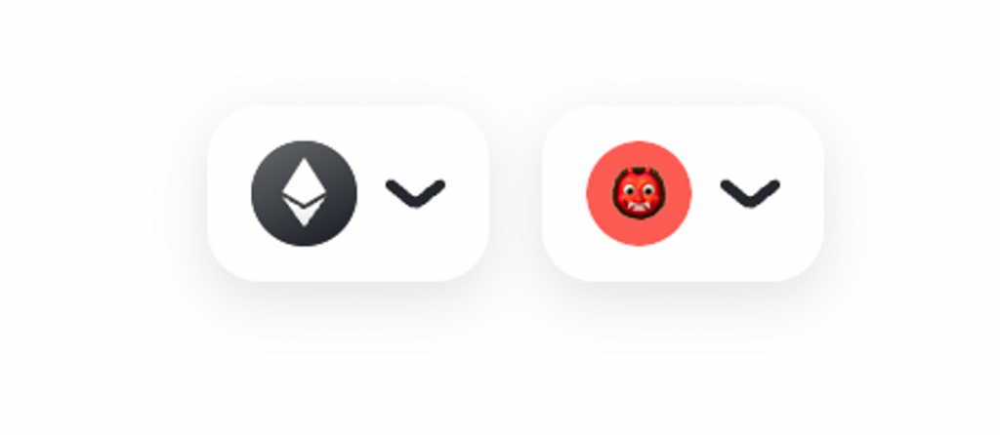
也可以指定不同的螢幕大小下用不同的選項
[code] <ConnectButton chainStatus={{ largeScreen: “full”, smallScreen: “icon”, }} accountStatus={{ largeScreen: “full”, smallScreen: “avatar”, }} showBalance={false} />
[/code]
也有自訂 theme 的選項，包含 light & dark theme、主題色、border radius 等等
[code] import { darkTheme } from “@rainbow-me/rainbowkit”;
// ...
<RainbowKitProvider
chains={chains}
theme={darkTheme({
accentColor: "#7b3fe4",
accentColorForeground: "white",
borderRadius: "large",
fontStack: "system",
overlayBlur: "small",
})}
>[/code]
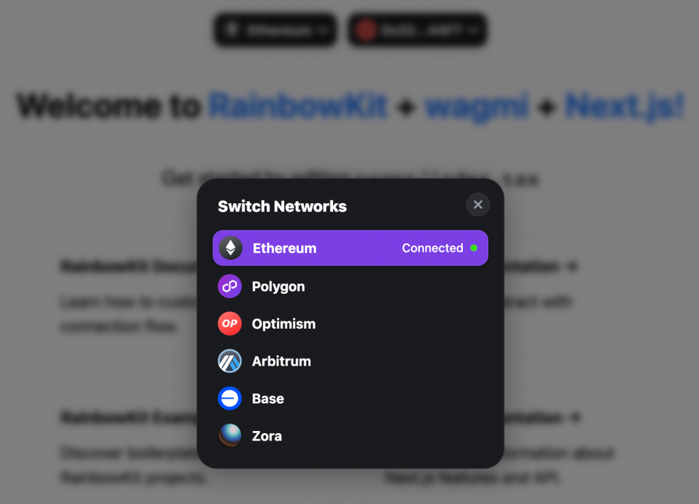
另外在按下 Connect Wallet 後的錢包列表也可以客製化，只要把預設使用
getDefaultWallets 拿到的 connectors 換成用
connectorsForWallets 並指定要呈現哪些 wallets 即可
[code] import { connectorsForWallets, } from “@rainbow-me/rainbowkit”; import { injectedWallet, rainbowWallet, walletConnectWallet, trustWallet, } from “@rainbow-me/rainbowkit/wallets”;
// ...
const projectId = "YOUR_PROJECT_ID";
const connectors = connectorsForWallets([
{
groupName: "Recommended",
wallets: [
injectedWallet({ chains }),
rainbowWallet({ projectId, chains }),
walletConnectWallet({ projectId, chains }),
trustWallet({ projectId, chains }),
],
},
]);[/code]
這樣就可以呈現以下效果：
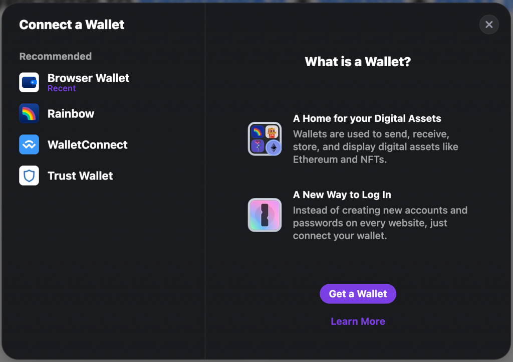
其中的 projectId 設定稍後會講到，至於
injectedWallet 指的是如果使用者有在瀏覽器安裝像 Metamask
的這種錢包 Extension，錢包就會對瀏覽器 inject 一個
window.ethereum object，因此使用
injectedWallet 就可以自動連上這種透過瀏覽器 Extension
安裝的錢包。Rainbow Kit 提供許多錢包選項（官方文件），有興趣的話可以任選幾個放進錢包列表中看看效果。
另一個 Rainbow Kit 做得很方便的點是在手機上的體驗，因為在手機上的錢包 App 跟我們瀏覽 DApp 時可能會不一樣，例如大家可能用 Chrome 或 Safari 瀏覽 DApp，但需要連接到 Metamask 的錢包 App，所以當按下 Metamask 時就會透過 Deep Link 的方式跳轉到 Metamask 中詢問是否要連接。可以用手機體驗看看 RainbowKit 官網的連接錢包功能（前提是要先安裝 Metamask App，讀者可以把電腦上的 Metamask 註記詞匯入到 Metamask 手機 app 上，這樣就能讓兩邊的錢包地址一致）。
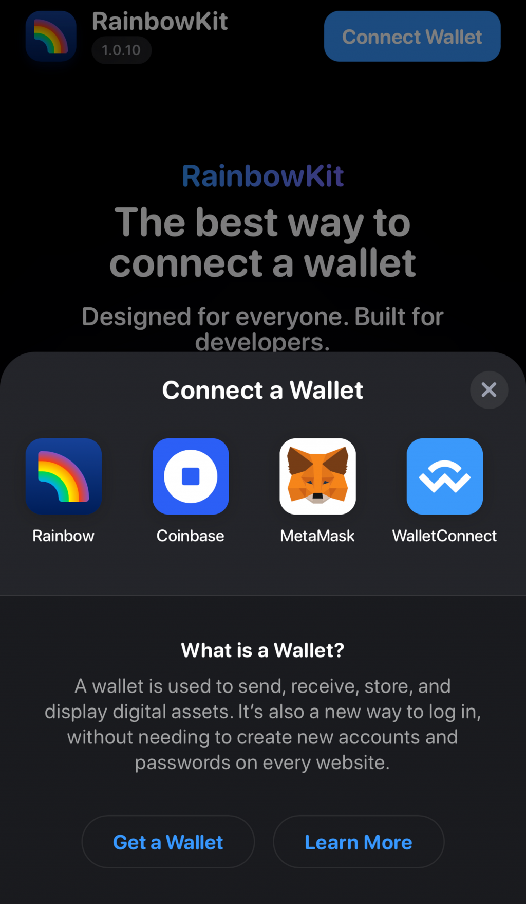
在預設的錢包列表中有個選項是 Wallet Connect，點擊後會看到一個 QR Code，這個是方便使用者在不同裝置上使用錢包跟 DApp 的協議，例如蠻多人常用手機錢包來連接電腦上開的 DApp。有安裝 Metamask App 的話可以透過右上角的掃瞄功能來掃這個 QR Code，就會跳出連接錢包的選項。
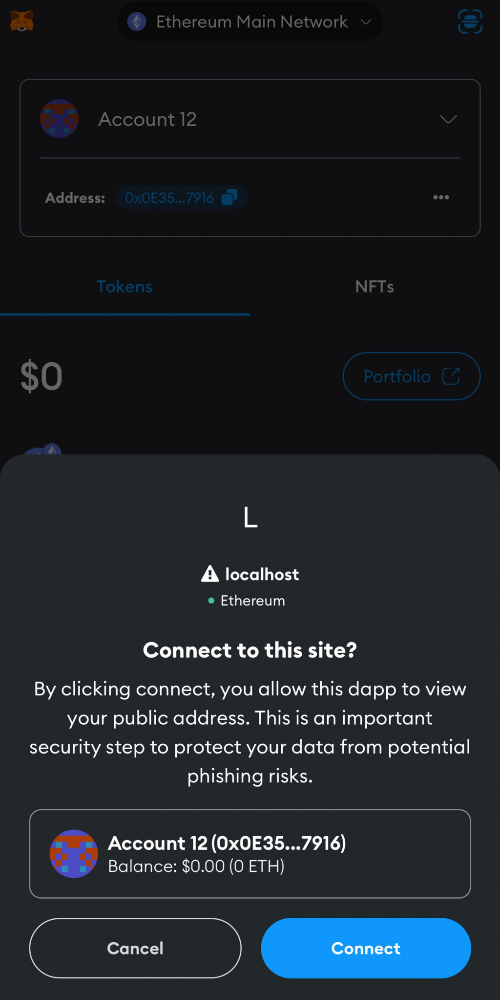
這樣後續只要 DApp 發出任何交易簽名的請求，錢包 App 就會跳出來讓使用者確認，並處理確認或拒絕相對應的行為，這個在一般錢包 App 中已經算是標配的功能。Wallet Connect 也有提供對應的 SDK 讓 DApp 方便整合這個功能（Github 連結），一樣是有考慮到 Desktop 跟 Mobile 裝置上的不同。預設的樣式長得像這樣，也算是蠻常在其他 DApp 連接錢包時看到的畫面
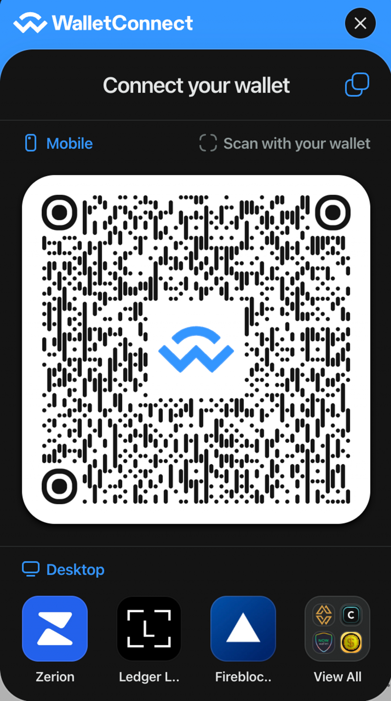
不過目前 DApp 如果要支援 Wallet Connect （目前最新版是 v2），就要先到
Wallet Connect Cloud
註冊一個自己的 DApp 才能正常使用。照著指示註冊後建立一個新的
Project，就會在裡面看到你的 Project ID，這個 ID 就是前面
projectId 所需要的值了。
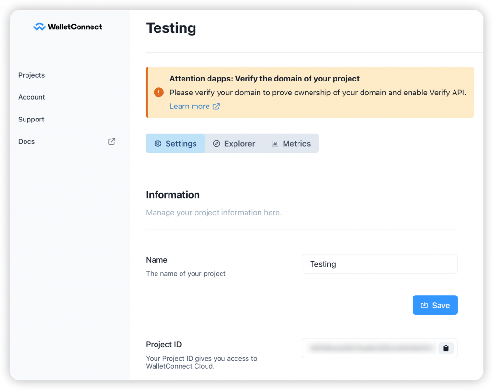
有了 Rainbow Kit 以及 Wallet Connect，就可以把前一天的 DApp
改寫成使用 Rainbow Kit
的方式，這樣像連接錢包、顯示餘額、顯示及切換鏈等等功能就都不用自己做了，因為
ConnectButton 已經內建這些功能，只需要留下顯示 UNI Token
Balance 的部分即可。以下是 profile.tsx
改寫後的內容（為求簡短只留 return 的部分）
<button onClick={() => sendUniTx()}>Send UNI</button>
{isLoading && <div>Check Your Wallet...</div>}
{isSuccess && <div>Transaction Hash: {txData?.hash}</div>}
</>
)}
</div>
);[/code]
以及在 _app.tsx 呼叫 configureChains
時多給他 sepolia 這條鏈
[code] const { chains, publicClient, webSocketPublicClient } = configureChains( [ mainnet, sepolia, polygon, optimism, arbitrum, base, zora, …(process.env.NEXT_PUBLIC_ENABLE_TESTNETS === “true” ? [goerli] : []), ], [ alchemyProvider({ apiKey: process.env.NEXT_PUBLIC_ALCHEMY_KEY! }), publicProvider(), ] );
[/code]
這樣就可以用 Metamask App 搭配 Wallet Connect 來連接這個 DApp 了。首先把 Metamask App 中的鏈切換成 Sepolia（一樣要開啟 Show test networks 的選項）
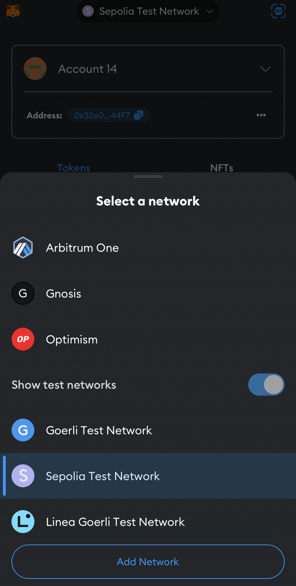
再到
[localhost:3000/profile](http://localhost:3000/profile)
頁面按下 Connect Wallet，用跟前面一樣的步驟讓 Metamask 透過 Wallet
Connect 連上，就可以看到 UNI Token Balance 了
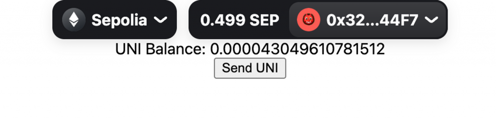
再按下 Send UNI 後，Metamask App 裡就會跳出交易的請求，按下確認就能成功送出交易了！
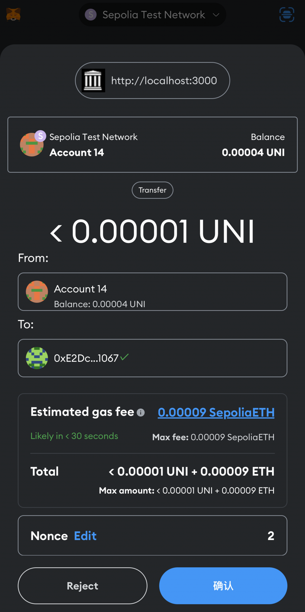
今天我們使用 Rainbow Kit 來方便的實現連接錢包的功能，也了解 Wallet Connect 的運作方式並實際把前一天實作的 DApp 用 Rainbow Kit 改寫，支援多個錢包以及 Wallet Connect 協議，並在最後成功送出了交易，完整的程式碼在這裡。明天會開始實作一個 DApp 常見的功能，它跟前後端都會有關係，也就是「錢包登入」。敬請期待！